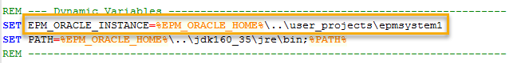

Extract the downloaded ZIP file in any folder located on a EPM server that contains Foundation. In case you renamed the instance, edit the variable EPM_ORACLE_INSTANCE located on the file set_env.cmd to match your configuration.
Continue with the configuration of Tools-EPM.
Extract the downloaded ZIP file in any folder located on each EPM server within the distributed environment. Some utilities may not work, depending on the utility and installed EPM components. Please see System Requirements for more details. On each server, edit the variable EPM_ORACLE_INSTANCE located on the file set_env.cmd to match the configuration of that server.
Continue with the configuration of Tools-EPM.
In case multiple instances are configured on either of the deployment methods (Single server / Distributed), use the first instance.
Continue with the configuration of Tools-EPM.
Screen-shot

Created with the Personal Edition of HelpNDoc: Benefits of a Help Authoring Tool